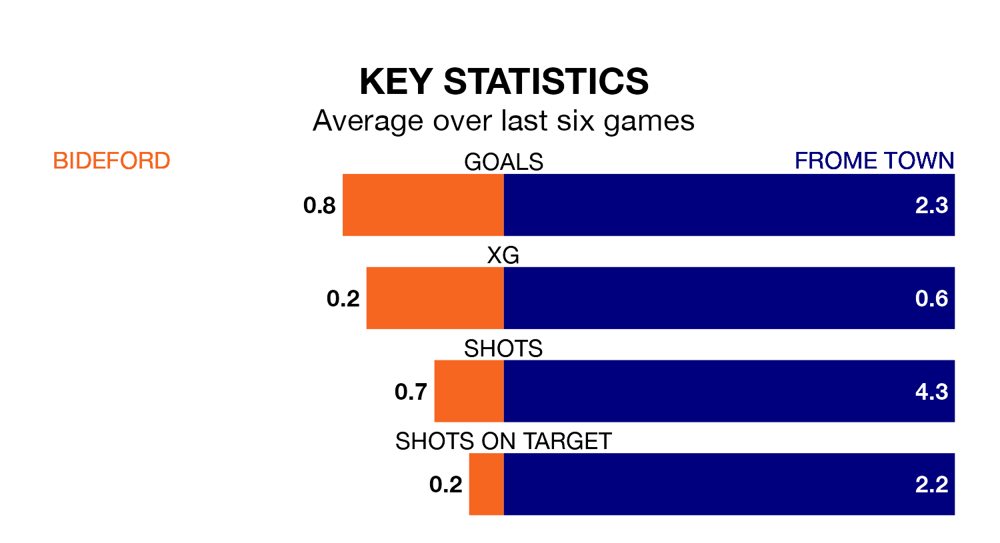

Frome Town face a challenge to maintain their high-scoring form away against a tight Bideford defence on Saturday.
With 56 goals in 26 games, Frome are the joint-second-highest scorers in the Southern League Division One South ahead of the 3pm kick-off at the Sports Ground.
They face a Bideford side who have scored 34 in 23 matches, but conceded only 32 goals, putting them joint-third among the league's tightest defences – only Wimborne Town and Hamworthy United have conceded fewer goals.
Frome are second in the table after 26 games, of which they have won 16 and drawn five, earning 53 points.
Bideford are seven places behind Town in ninth, with 11 wins and four draws putting them on 37 points.
In the last 10 years, Bideford and Frome have played each other on 11 occasions. They won four each, and they drew three times.
On average, Bideford scored 1.4 goals and Frome 1.0 in those matches.
Their last meeting was on April 4, when they played out a 0-0 draw.
The home team are in bad form in the Southern League Division One South, with one win and a draw from their last six games.
With four wins and a draw over that period, the visitors' form is much better – they have taken 13 points from 18, compared to Bideford's four.
Bideford's last match was on March 2, a 2-0 loss against Evesham United.
Frome drew 0-0 with Willand Rovers last time out, also on March 2.
Updated: 09:34 (UTC), 08/03/24